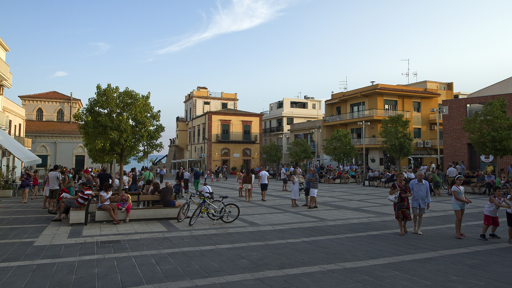
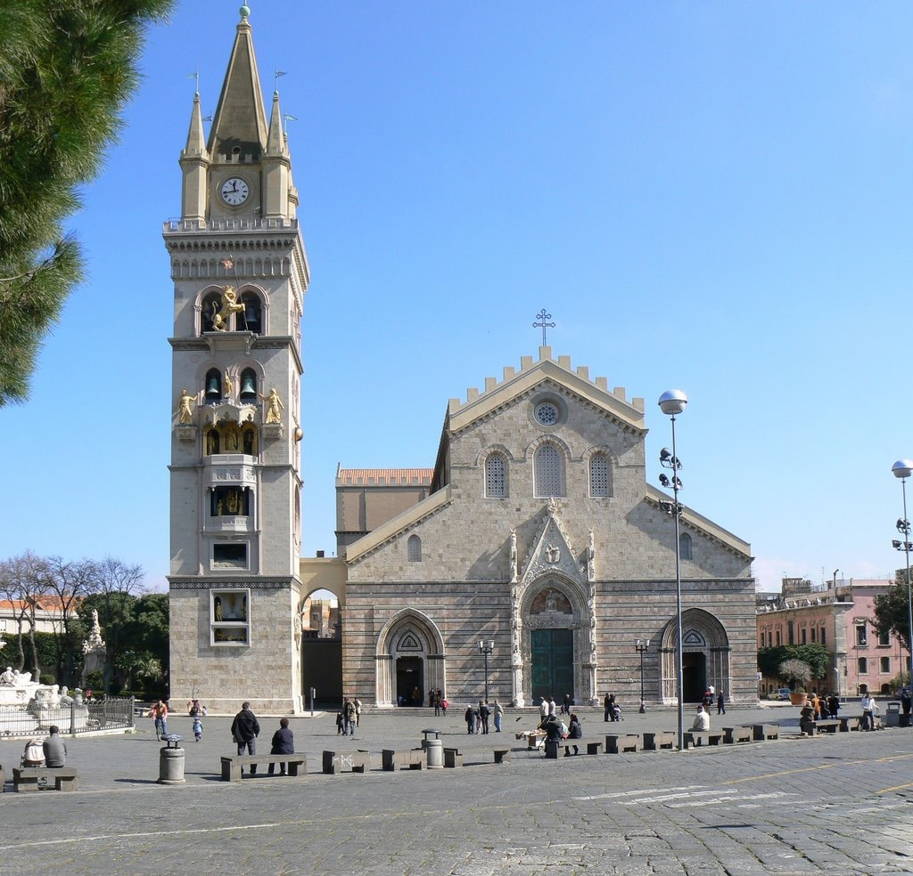
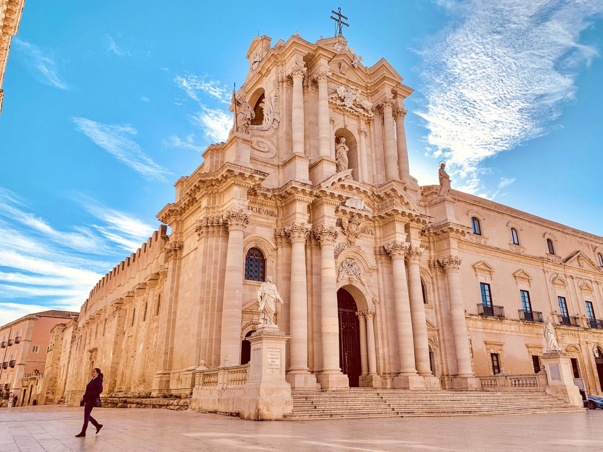
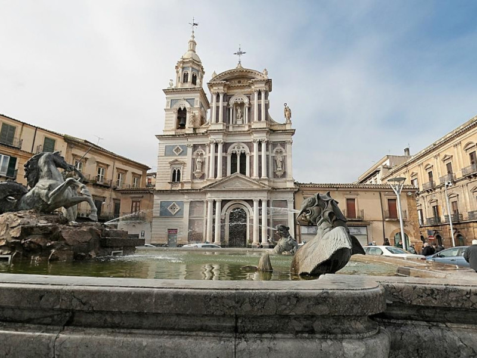
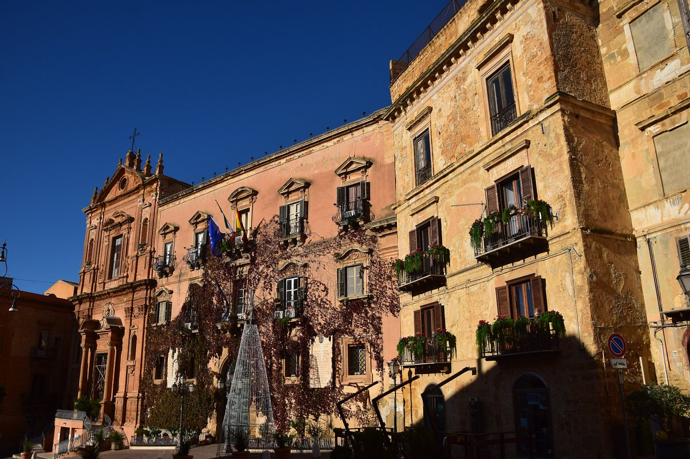
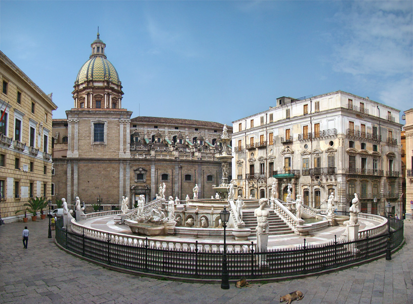
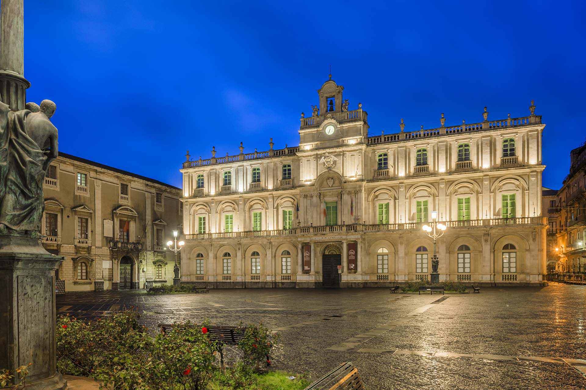
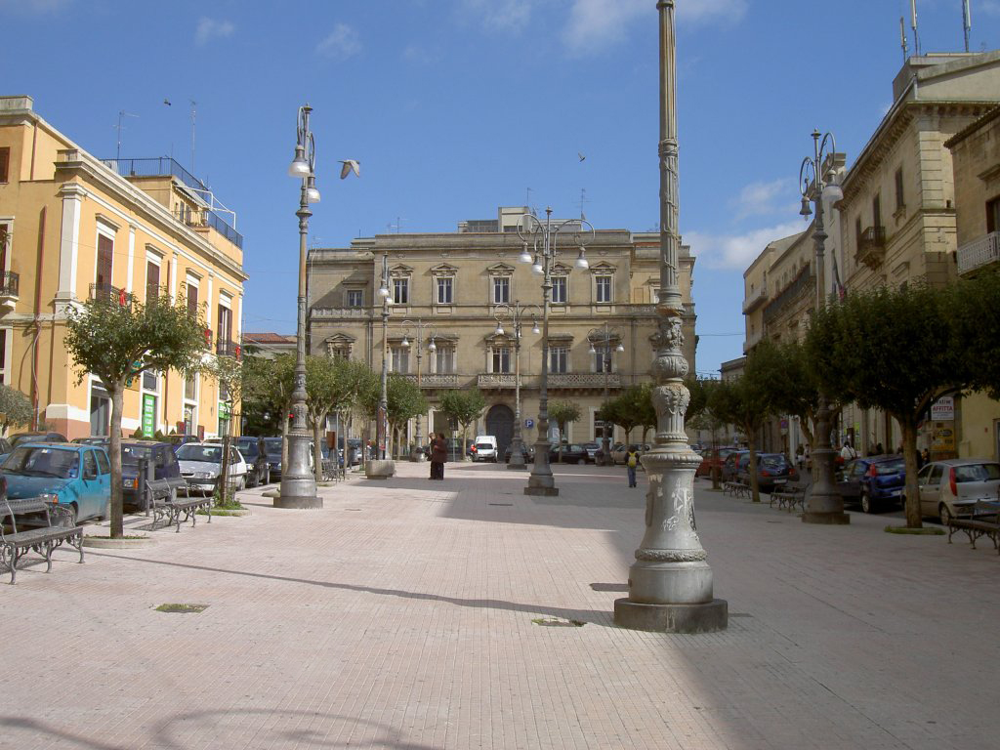

Un viaggio fotografico tra la storia, l'architettura e l'anima dei centri urbani siciliani

Un vivace punto di incontro affacciato sul Mediterraneo, dove la brezza marina sposa lo stile di vita lento e caloroso dell'isola.

Dominata dal maestoso Duomo e dal celebre campanile astronomico, rappresenta il cuore pulsante della città dello Stretto.

Situata nell'isola di Ortigia, questa splendida piazza in pietra calcarea è incorniciata dal Duomo barocco, sorto sull'antico tempio di Atena.

Il centro geometrico e storico della città, impreziosito dalla maestosa Fontana del Tritone e dalle quinte architettoniche della Cattedrale.

Sede del Palazzo dei Giganti, questo spazio incarna la transizione tra il centro storico medievale e la grandezza monumentale agrigentina.

Nota anche come "Piazza della Vergogna" per la sensualità delle statue della sua monumentale fontana rinascimentale, a pochi passi dai Quattro Canti.

Uno scenografico spazio barocco pavimentato in pietra lavica, illuminato dai caratteristici lampioni bronzei e dominato dal Palazzo dell'Università.

Ampio spazio urbano monumentale caratterizzato da imponenti lampioni storici e palazzi nobiliari che raccontano la vita quotidiana siciliana.